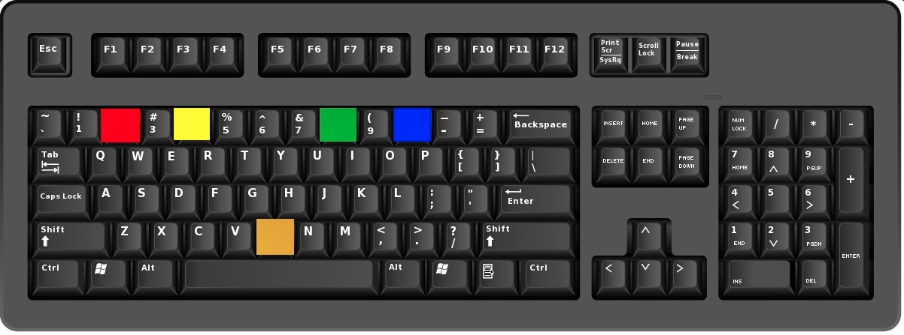

Instructions (English)
- Reaction Time Test:
- The reaction time test measures your speed and accuracy in responding to visual stimuli.
- Your reaction time will be recorded in milliseconds using precise computer algorithms.
- You must respond to colored lights as quickly and accurately as possible.
- Test Procedure:
- Press and hold the 'B' key on your keyboard to trigger the stimulus light.
- Keep holding 'B' until one of the colored lights turns ON.
- When a light appears, immediately release 'B' and press the specific button assigned to that color.
- After striking the response key, press and hold 'B' again for the next stimulus.
- Keyboard Key Color Mapping:
- 2 — Red Light (Top lamp)
- 4 — Yellow Light (Second lamp)
- 8 — Green Light (Third lamp)
- 0 — Blue Light (Bottom lamp)
- B — Golden Neutral Button (Hold to initiate / reset)
- Important Exam Rules:
- Releasing 'B' before the required hold duration is a Premature Release Fault.
- You have a maximum of 5.00 seconds to respond after a light appears.
- RDSO Qualifying Criteria: 100% Accuracy and T-Score ≥ 42.0000.
निर्देश (Hindi)
- प्रतिक्रिया समय परीक्षण (Reaction Time Test):
- प्रतिक्रिया समय परीक्षण दृश्य संकेतों पर आपकी प्रतिक्रिया की गति और सटीकता को मापता है।
- आपका प्रतिक्रिया समय कंप्यूटर सॉफ्टवेयर द्वारा मिलीसेकंड में मापा जाएगा।
- रंगीन बत्ती जलने पर आपको तुरंत और सही बटन दबाकर प्रतिक्रिया देनी होगी।
- परीक्षण प्रक्रिया (Procedure):
- परीक्षण शुरू करने और बत्ती जलाने के लिए कीबोर्ड पर 'B' बटन दबाकर रखें।
- जब तक बत्ती नहीं जलती, तब तक 'B' बटन को दबाए रखें।
- जैसे ही कोई रंगीन बत्ती जले, तुरंत 'B' छोड़ें और उस रंग के लिए निर्धारित कुंजी दबाएँ।
- बटन दबाने के बाद, अगली बत्ती के लिए फिर से 'B' दबाकर रखें।
- कुंजियों के रंग (Key Color Mapping):
- 2 — लाल (Red) - सबसे ऊपर की बत्ती
- 4 — पीला (Yellow) - दूसरी बत्ती
- 8 — हरा (Green) - तीसरी बत्ती
- 0 — नीला (Blue) - सबसे नीचे की बत्ती
- B — सुनहरा/न्यूट्रल बटन (दबाकर शुरू करने के लिए)
- महत्वपूर्ण परीक्षा नियम:
- बत्ती जलने से पहले 'B' बटन छोड़ना समयपूर्व विमुक्ति त्रुटि माना जाएगा।
- बत्ती जलने के बाद प्रतिक्रिया देने के लिए अधिकतम 5 सेकंड का समय मिलेगा।
- RDSO उत्तीर्ण मानदंड: 100% सटीकता एवं T-Score ≥ 42.0000 अनिवार्य है।
Official Keyboard Setup Guide (As per RDSO Apparatus Pattern)
